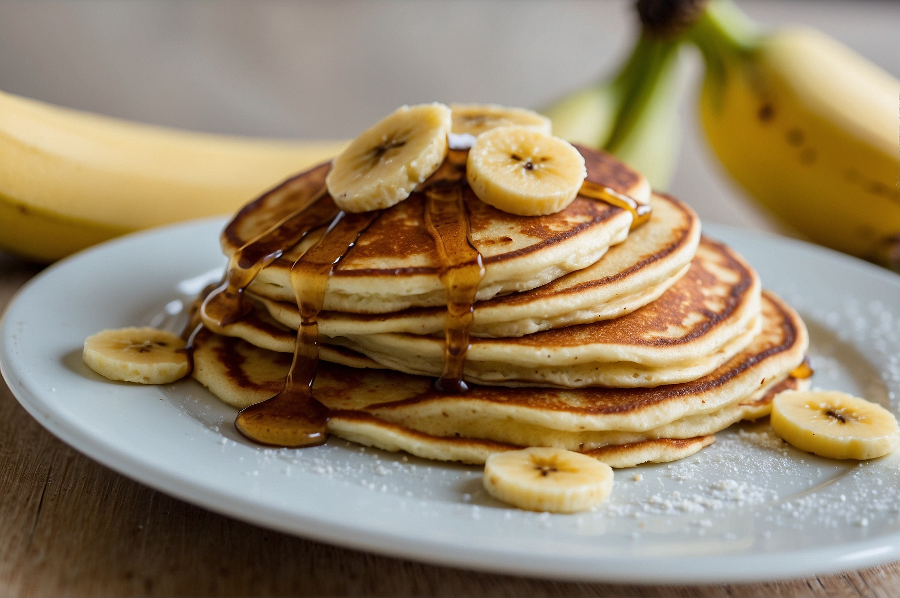

Banana Pancakes
Ingredients:
- 1 ripe banana
- 1 egg
- 1/4 cup all-purpose flour
- 1/2 teaspoon baking powder
- 1/4 teaspoon ground cinnamon (optional)
- Butter or oil for cooking
- Maple syrup, honey, or other toppings of your choice (e.g., fresh berries, chopped nuts, yogurt)
Procedure:
- Peel the banana and place it in a mixing bowl. Mash the banana using a fork until it becomes smooth.
- Add the egg to the mashed banana and whisk together until well combined.
- In a separate bowl, sift together the all-purpose flour, baking powder, and ground cinnamon (if using).
- Gradually add the dry ingredients to the banana mixture, stirring until just combined. Becareful not to overmix; a few lumps are okay.
- Heat a non-stick skillet or griddle over medium heat and add a small amount of butter or oil to coat the surface.
- Pour about 1/4 cup of the pancake batter onto the skillet for each pancake. Cook until bubbles form on the surface and the edges look set, about 2-3 minutes.
- Carefully flip the pancakes using a spatula and cook for an additional 1-2 minutes, or until golden brown on the bottom.
- Remove the pancakes from the skillet and repeat with the remaining batter, adding more butter or oil to the skillet as needed.
- Serve the banana pancakes warm, topped with your favorite toppings such as maple syrup, honey, fresh berries, chopped nuts, or yogurt.
- Enjoy your delicious banana pancakes!

Would you like additional explanation or a visual demonstration of how each step is done? Check out this cooking tutorial: Banana Pancakes Tutorial